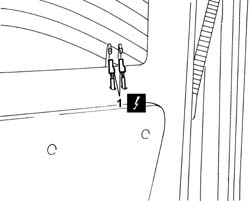
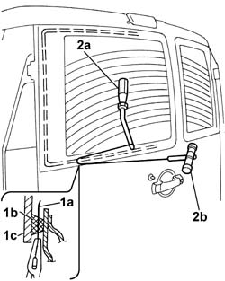
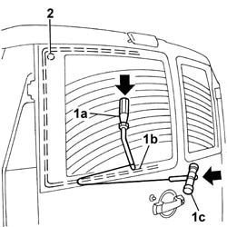
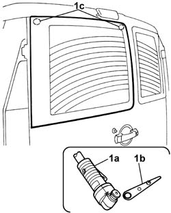
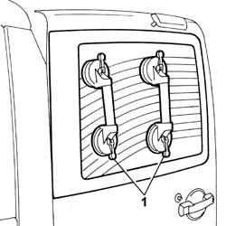
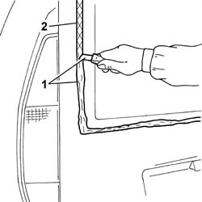
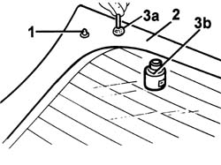
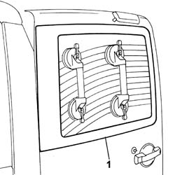
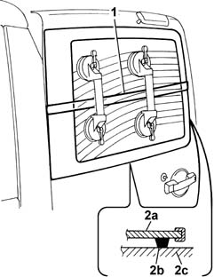

7035B24 tinted window of one load compartment rear door flap r r including cleaning of housing on flap
- Path
- Procedures > 70 FITTINGS > 7035 BODYSHELL WINDOWS > 7035B rear window > 7035B24 tinted window of one load compartment rear door flap r r including cleaning of housing on flap
- Kind
- repair procedure (removal / refitting; the operation number is the code)
- Applies to
- all engines; all production periods
- Interactive page
- https://sloeber94.github.io/elrnDB-fDbl/en/#/2585123
Applies to: all engines; all production periods
 Removing
Removing
 Refitting
RefittingDisconnect the battery negative terminal.
Op. 5050C34 REAR WIPER ARM WITH BLADE - R+R
1. Disconnect the electrical connectors for the heated rear windscreen and place them at the side.
 | Name | Connector |
|---|---|---|
1 | Right heated rear windscreen |
| Name | Connector |
|---|---|---|
1 | Left heated rear windscreen |

Applies to: all engines; all production periods
Apply adhesive tape to protect the top and bottom edges of the bodywork.
The bead of sealant for the rearscreen can be cut using either harmonic wire or the vibrating knife; both methods are described below.
To cut the bead using harmonic wire, proceed as follows.
1. Cut a section of harmonic wire about 50 cm long then, using pliers, insert one end (1a) of the harmonic wire through the bead of sealant (1b) which secures the window (1c).
2. Secure one end of the wire to the special retaining tool (2a), inside the vehicle, and the other end to the traction handle (2b), outside the vehicle.

Applies to: all engines; all production periods
1. The operator inside the vehicle should keep the end of the tool (1a) pressed against the bead of sealant (1b) about 30 cm away from the point where the wire passes, whilst the other operator, outside the vehicle, should pull the handle (1c), following the surround of the windscreen.
2. During cutting, be careful with the rear window's centring side pins.

Applies to: all engines; all production periods
To cut the bead using the vibrating knife, proceed as described below.
1. Use the vibrating knife (1a), with blade (1b), and cut the bead of sealant along the entire preimeter of the rear window, working from inside the car, taking care over the centering pins (1c).

Applies to: all engines; all production periods
1. After cutting the whole bead of sealant, fit the suction handles on the rear window, then with the assistance of a second operator, remove the rear window and rest it on a supporting stand.

Applies to: all engines; all production periods
Refitting
Removing1. Using a suitable tool, cut and smooth off the bead of sealant in the rear window frame, so as to leave a thickness of between 0.25 and 1 mm, without scratching the paintwork.
2. Clean the rear window seating carefully with compressed air and degrease thoroughly with heptane.
If bonding takes place 60 minutes after cutting and smoothing the bead of sealant, treat the sealant surface with the specific activator and wait 15 minutes before fixing the windscreen.
 | Type | Component | Name | Qty. |
|---|---|---|---|---|
- | PRIMER | TAIL-GATE GLASS SEALING STRIP | - | - |
Touch up the paintwork if necessary.

Applies to: all engines; all production periods
If the same windscreen is being reused.
If this is not the case, use a new windscreen and proceed as described below.
1. Fit locating pins.
2. Degrease the screen printed area around the edge of the new window.
3. Apply glass adhesion promoter (primer) (3b) to the screen printed area round the outside using applicator (3a) provided in the kit.

Applies to: all engines; all production periods
Remove the adhesive tape from the edges of the bodywork, along the top and bottom perimeter of the rear window frame.
1. Test fit the rear window and check that it is centred properly.

Applies to: all engines; all production periods
Use an air gun to extrude a bead of sealant as evenly as possible along the perimeter of the rear window.
| Type | Component | Name | Qty. |
|---|---|---|---|---|
- | Product n° 71711976 | TAIL-GATE GLASS SEALING STRIP | - | - |
1. With the assistance of a second operator, fit the rear window in its seating immediately after applying the sealant and bed it in place.
2. Fit the belt (2a) and adjust the tension to apply uniform pressure over the entire back window in order to ensure a correct match between window (2b), sealant (2c) and rearscreen housing (2d).

Applies to: all engines; all production periods
Connect the electrical connectors for the heated rear windscreen.
| Name | Connector |
|---|---|---|
- | Right heated rear windscreen |
| Name | Connector |
|---|---|---|
- | Left heated rear windscreen |
Op. 5050C34 REAR WIPER ARM WITH BLADE - R+R
Connect the battery negative terminal.
Topics linked from this page (3)
- 5050C34 rear wiper arm with blade - r+r
- P53 RIGHT HEATED REAR WINDSCREEN ( RIGHT DOOR )
- P054 LEFT HEATED REAR WINDSCREEN